Abschlussarbeit · UX/UI Design
Zweite Liebe
In meiner Abschlussarbeit habe ich eine Marke und einen klickbaren Shop-Prototyp für hochwertige, nachhaltige Second-Hand-Mode entwickelt.
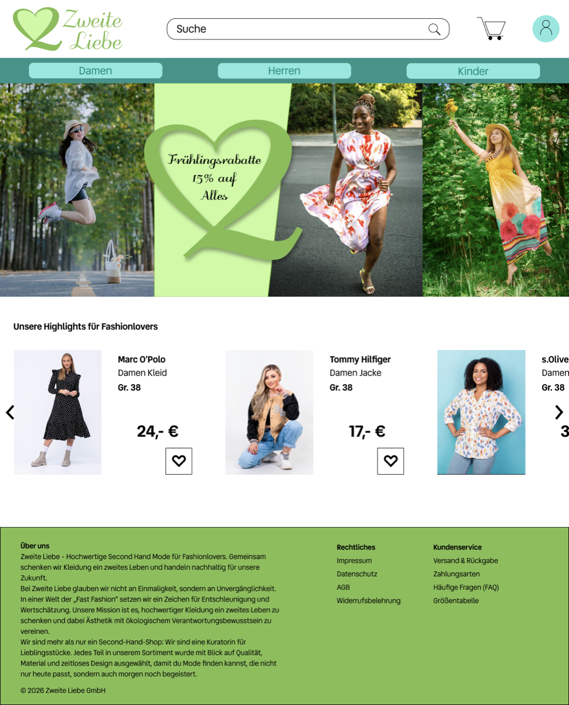
01 · Herausforderung
Die Aufgabe: Marke und Shop-Prototyp entwickeln.
Die Aufgabe war, für das fiktive Start-up „Zweite Liebe“ eine Marke und einen klickbaren Shop-Prototyp zu entwickeln. Die Zielgruppe bestand aus 18- bis 45-jährigen, überwiegend weiblichen Kund:innen mit hohem Interesse an nachhaltiger Mode.
Neben Logo, Farben, Schriften und Bildsprache entstanden eine Sitemap sowie responsive Ansichten für Startseite, Produktdetail und Adresseingabe im Bestellprozess.
Eine vertraute Shop-Struktur mit einer eigenen, auf Nachhaltigkeit ausgerichteten Markenidee verbinden.
02 · Logo, Farben & Schriften
Meine Entscheidungen für Logo, Farben und Schriften.
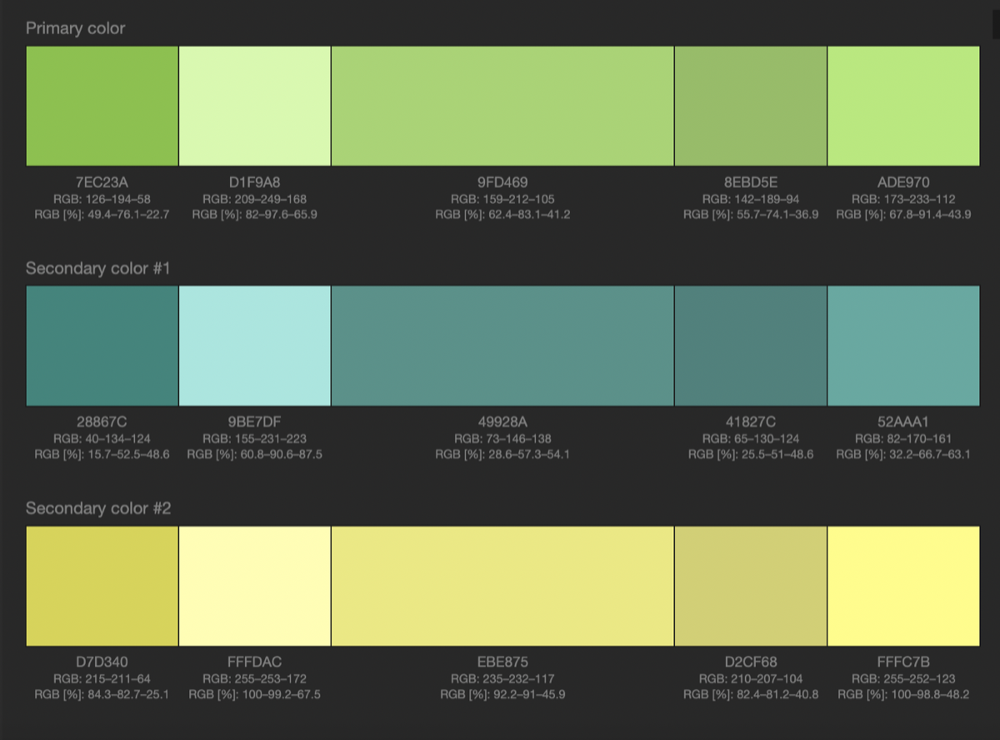
Durch eine einfache Form ohne zu viele Details wird das Logo einprägsam. Die stärkere „2“ betont den Second-Hand-Gedanken.
Für das Logo wählte ich eine Serifenschrift, für die Benutzeroberfläche eine besser lesbare serifenlose Schrift.
Für den Entwurf nutzte ich Bilder von Models und Produktdetails, die zur vorgegebenen Zielgruppe passen sollten.
03 · Struktur & Navigation
Bekannte Muster für Navigation und Orientierung.
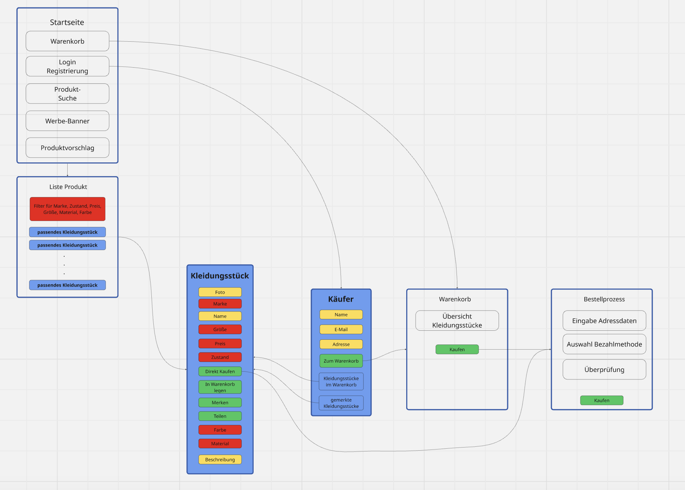
Auf großen Bildschirmen führt eine horizontale Navigation direkt zu Damen, Herren und Kinder. Mobil wird sie platzsparend in ein Burgermenü überführt. Suche, Login, Merkliste und Warenkorb verwenden bewusst bekannte Symbole.
Für das Finden passender Kleidungsstücke wurden sechs Filter vorgesehen: Marke, Größe, Preis, Zustand, Farbe und Material.
- 01Produkte entdecken
- 02Details und Zustand prüfen
- 03Artikel merken oder kaufen
- 04Adresse im Checkout eingeben
04 · Vom Scribble zum Interface
Die Struktur zunächst auf Papier planen.
Mit handgezeichneten Scribbles habe ich Inhaltsblöcke und erste Varianten für Desktop und Mobil festgehalten.
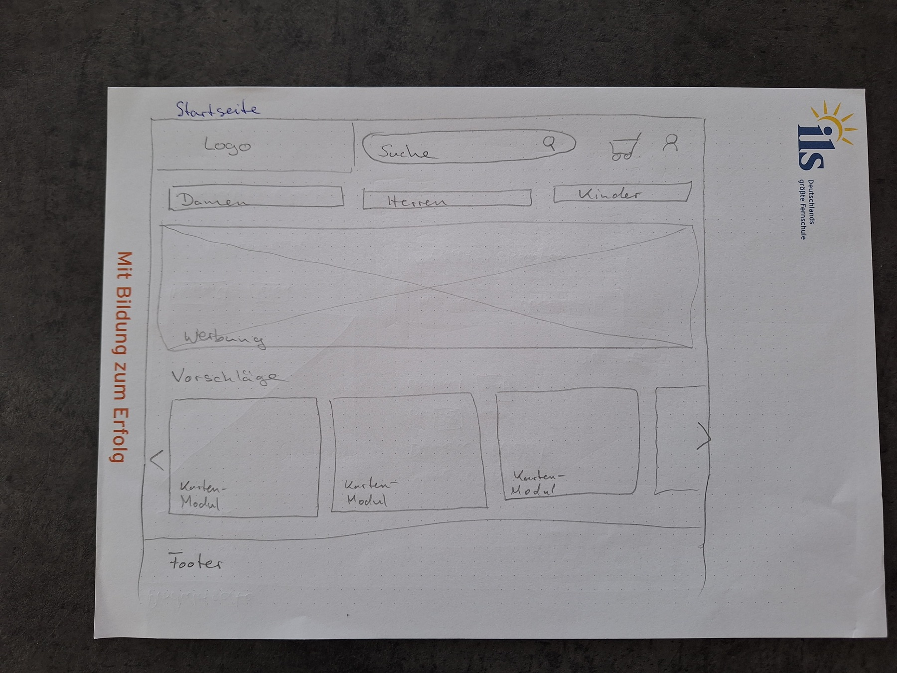
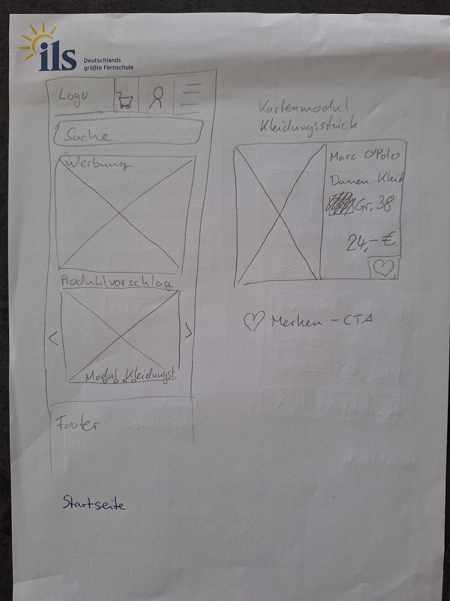
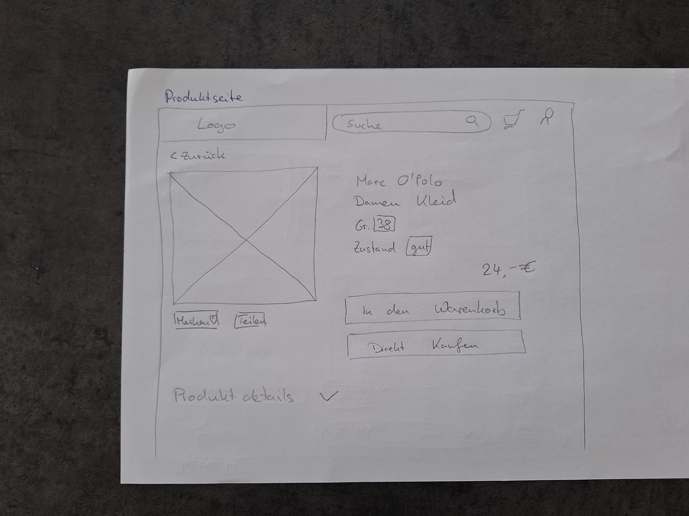
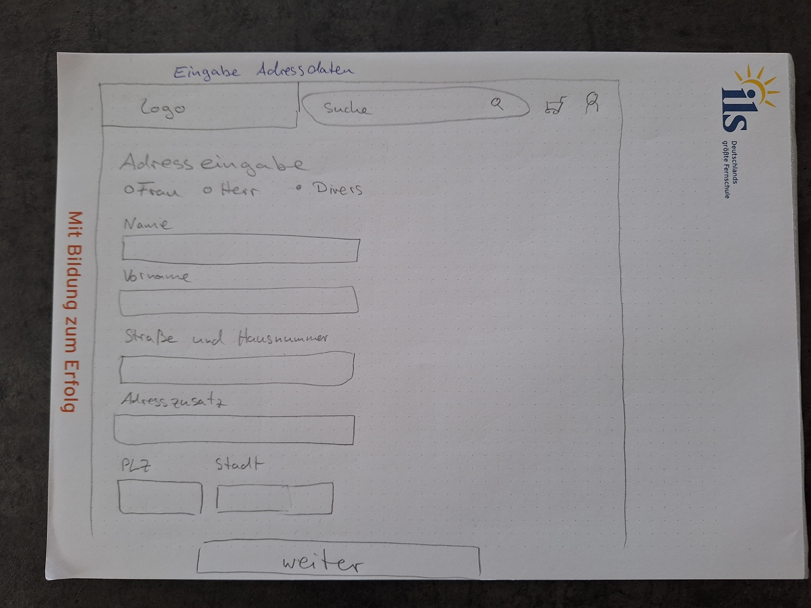
Entscheidungswege
Von Ausgangspunkten zu sichtbaren Lösungen.
Der Shop sollte ohne lange Einarbeitung verständlich sein.
Bekannte Navigationsmuster, Symbole und Filter verwenden.
Navigation, Suche, Merkliste, Warenkorb und sechs Filter folgen vertrauten Shop-Mustern.
Die zentralen Abläufe sollten auf Desktop und Mobil funktionieren.
Beide Größen bereits in den Scribbles getrennt planen.
Auf Mobilgeräten folgen Produktinformationen und Handlungen in einer klaren Reihenfolge untereinander.
05 · Figma-Prototyp
Desktop- und Mobilansichten in Figma.
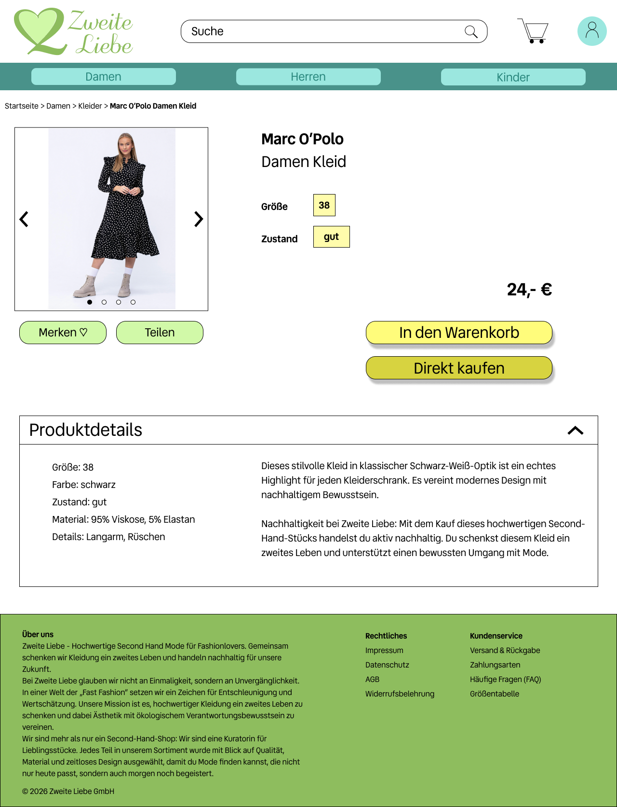
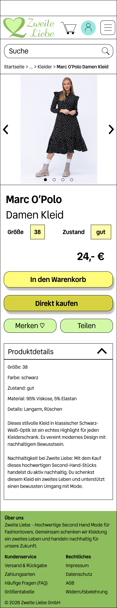
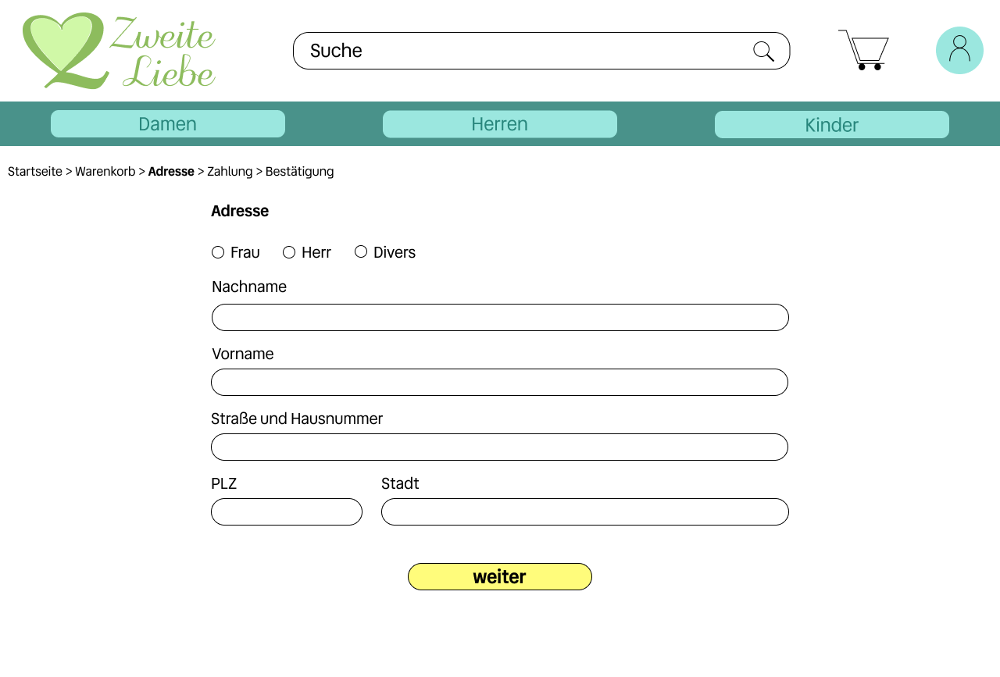
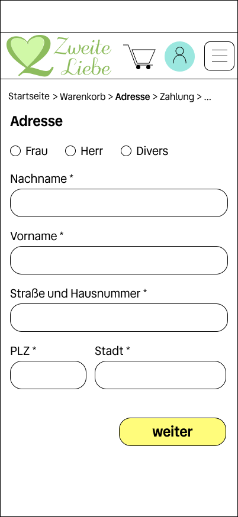
Mit heutigem Wissen
Wie ich den Prototyp heute weiterentwickeln würde.
Kaufweg weiter schärfen
Heute würde ich „In den Warenkorb“ und „Direkt kaufen“ noch eindeutiger gewichten und mit Nutzer:innen prüfen, welche Variante den Kaufweg am besten unterstützt.
Mobile Inhalte priorisieren
Preis und primäre Kaufhandlung würde ich auf der mobilen Produktseite früher sichtbar machen. Den Footer würde ich auf die wichtigsten Links reduzieren und längere Zusatzinformationen auslagern.
Zustandsmodell erweitern
Menü-, Bild-, Detail- und Auswahlzustände sind im Prototyp bereits angelegt. Ergänzen würde ich Fokus-, Fehler- und Filterzustände und anschließend die zentralen Wege mit Personen aus der Zielgruppe testen.
Rückblick
Grundlagen von Hand erarbeitet.
Logoideen, Informationsstruktur und Scribbles habe ich händisch entwickelt. So konnte ich grundlegende Entscheidungen selbst nachvollziehen, bevor ich die Entwürfe in Figma als responsive Prototypen ausarbeitete.
Da es sich um eine fiktive Abschlussaufgabe handelt wurde der Prototyp nicht mit Personen aus der Zielgruppe getestet. In einem realen Szenario würde ich als nächsten Schritt solche Tests durchführen, Fokus- und Fehlerzustände ergänzen und die Filterlogik weiter ausarbeiten.